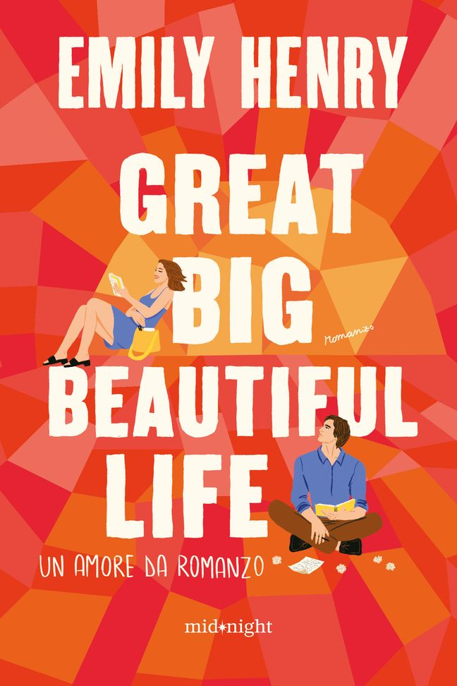

Se vuoi sapere della famiglia di Mick Riva (terzo marito):

Se invece ti piace alternare il presente al passato leggi questa romcom:

Trama: Dopo anni vissuti lontano dai riflettori, la ex "divina" di Hollywood Evelyn Hugo, autentica icona della storia del cinema, è finalmente pronta a svelare la sua verità. E anche quella sui suoi sette mariti, naturalmente. Per farlo, sceglie Monique Grant, una reporter semisconosciuta. La più stupefatta è proprio Monique: perché proprio lei? E perché proprio adesso? Si dà il caso che per la giornalista non sia proprio un gran momento: dopo pochi mesi dalle nozze il marito l'ha lasciata, e a trentacinque anni la sua vita professionale sembra già arrivata a un punto morto. L'incarico di scrivere la biografia di Evelyn Hugo potrebbe essere l'occasione che aspettava per dare una svolta alla sua carriera. E così, nello splendido appartamento di Manhattan dell'attrice, Monique ascolta affascinata le parole di Evelyn: dagli esordi nella Los Angeles degli anni Cinquanta fino alla decisione di ritirarsi dalle scene trent'anni dopo, passando per i numerosi matrimoni, l'attrice rivela una storia di feroce ambizione, amicizia inattesa, e un grande amore proibito. Monique si sente sempre più vicina alla leggendaria star: a mano a mano che il racconto di Evelyn si avvicina alla conclusione, appare chiaro che le loro vite sono legate in modo drammatico e ineludibile. I sette mariti di Evelyn Hugo è un viaggio affascinante attraverso lo splendore della vecchia Hollywood e le difficoltà del nostro tempo, che mette in scena due indimenticabili figure di donne, alla scoperta di cosa significhi – e di quanto costi – la verità.
Cosa ne penso io: Una storia meravigliosa, una penna scorrevole e avvicente, la traduzione ottima. L'ho iniziato in aereo per Dublino e l'ho amato così tanto che avrei voluto il volo durasse di più per non dovermi fermare. La divisione per "mariti" è geniale e permette di diluire il libro in sette giorni, anche se io non sono riuscita a farlo durare più di tre giorni. Evelyn non è perfetta, anzi, ma si riesce subito a empatizzare con lei. Monique invece... è un personaggio un po' insipido. Infatti le parti sul passato battono quelle al presente dieci a zero. Anche l'aggiunta di articoli di giornale fittizzi rende il tutto più intrigante e realistico.
★ ★ ★ ★ ★
Se vuoi sapere della famiglia di Mick Riva (terzo marito):
Se invece ti piace alternare il presente al passato leggi questa romcom:
